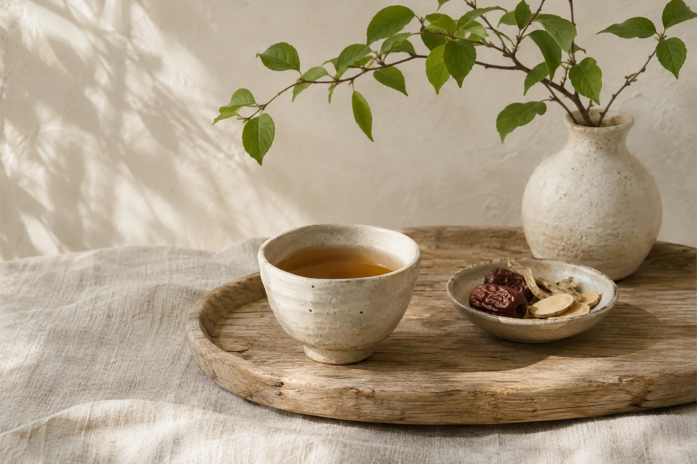
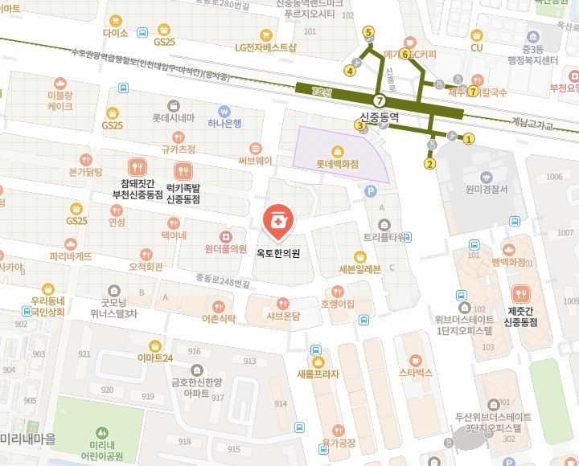

8체질을 바탕으로 살피는 몸
현재의 불편함과 평소 몸의 상태를 이야기하며
체질과 진료 방향을 함께 상담합니다.

옥토 이야기 OUR STORY
부천 옥토한의원은 8체질 진료를 중심으로
평소의 생활습관과 음식을 함께 살피는 한의원입니다.
현재의 불편함과 평소 몸의 상태를 이야기하며
체질과 진료 방향을 함께 상담합니다.
무엇을 먹고, 어떻게 쉬고, 어떤 하루를 보내는지.
진료실 밖의 일상도 함께 들여다봅니다.
한 명의 한의사가 진료하는 부천 옥토한의원.
편안하게 찾아와 몸의 고민을 나누는 곳을 지향합니다.
8체질 진료 OUR APPROACH
8체질의학의 관점에서 몸의 특성과 생활을 살피고,
개인에게 맞는 진료와 생활 방향을 상담합니다.
문진과 진맥으로 평소 몸의 상태와 불편한 증상을 살피며 체질을 상담합니다. 소화, 수면, 식습관 등 이야기하고 싶은 점을 정리해 오시면 좋습니다.
체질 상담과 경과 확인을 위해 여러 차례 방문이 안내될 수 있습니다. 방문 횟수와 간격은 진료 시 확인해 주세요.
8체질 진료 문의평소 자주 먹는 음식과 식사 후의 느낌, 수면과 생활 리듬을 함께 이야기합니다. 진료 내용을 바탕으로 나에게 맞는 생활 방향을 상담합니다.
음식과 생활에 관한 안내는 몸의 상태를 살핀 뒤 개인별로 이루어집니다.
상담 문의진료 내용과 치료 방법은 개인의 상태에 따라 달라질 수 있습니다. 궁금한 점은 방문 전 전화로 문의해 주세요.
첫 방문 안내 YOUR FIRST VISIT
방문 전 궁금한 점을 미리 확인하면
조금 더 여유롭게 진료를 준비할 수 있습니다.
원하시는 방문 일시와 상담 내용을
미리 말씀해 주세요. 초진 여부도 함께 알려 주세요.
불편한 증상, 자주 먹는 음식, 수면 습관.
복용 중인 약과 이전 검사 자료도 함께 준비해 주세요.
신중동역 3번 출구에서 260m.
호정프라자 504호, 주차는 1시간 지원됩니다.
여유로운 진료를 위해 032-322-8575로 먼저 예약을 문의해 주세요. 당일 접수 가능 여부도 전화로 확인하실 수 있습니다.
체질 상담과 경과 확인을 위해 여러 차례 방문이 안내될 수 있습니다. 필요한 횟수와 방문 간격은 진료 시 확인해 주세요.
목요일과 토요일은 오전 9시부터 오후 1시까지 진료합니다. 일요일은 정기 휴진이며, 공휴일과 임시 휴진 여부는 방문 전 확인해 주세요.
건물 주차를 1시간 무료로 이용하실 수 있습니다. 주변 일방통행 구간은 내비게이션 안내와 현장 표지판을 확인해 주세요. 주차장 진입과 주차 등록 방법은 한의원에 문의해 주세요.
오시는 길 COME VISIT US

지도 © NAVER 옥토한의원 · 호정프라자 504호신중동역 3번 출구에서 260m. 롯데백화점을 끼고 좌회전한 뒤 공원을 지나 호정프라자 5층으로 오세요.
주차장 진입이 어려우시면 032-322-8575로 문의해 주세요.
N 네이버 지도 · 최신 정보 ⌖ 카카오맵에서 보기